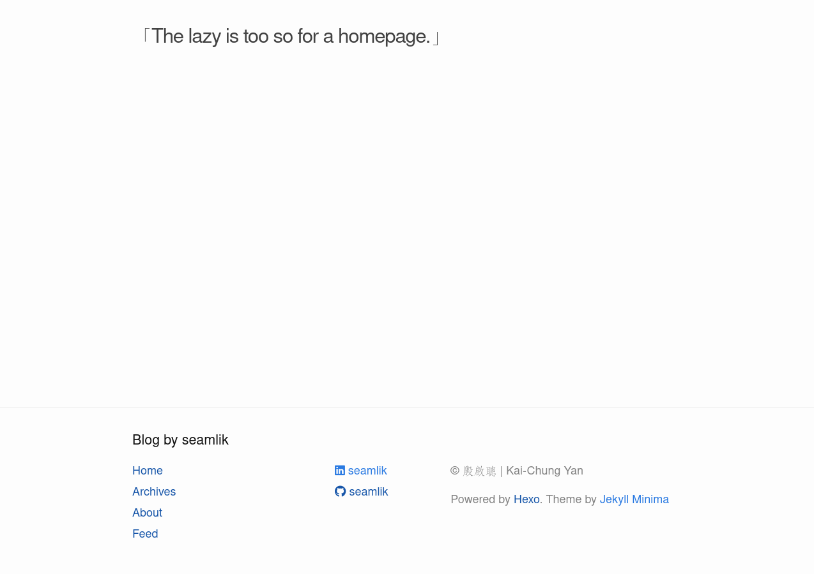
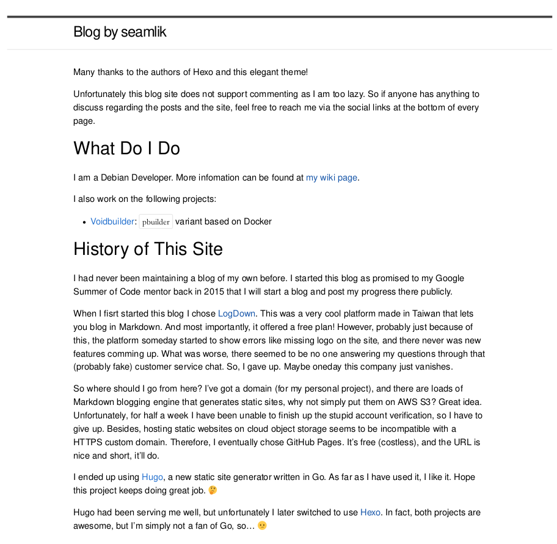

动态 - Moment
2024-08
二十六[26]
Excel与Word字号对应关系
1
2
3
4
5
6
7
8
9
10
11
12
13
14
15
16
17在Excel中，字号是以数字形式（磅数）表示的，而在Word中，尤其是在中文排版中，字号可以使用传统的字号名称，如“初号”、“一号”等。以下是常见的Word中文字号与Excel磅数之间的对应关系：
初号：42 磅 (pt)
小初号：36 磅 (pt)
一号：26 磅 (pt)
小一号：24 磅 (pt)
二号：22 磅 (pt)
小二号：18 磅 (pt)
三号：16 磅 (pt)
小三号：15 磅 (pt)
四号：14 磅 (pt)
小四号：12 磅 (pt)
五号：10.5 磅 (pt)
小五号：9 磅 (pt)
六号：7.5 磅 (pt)
小六号：6.5 磅 (pt)
七号：5.5 磅 (pt)
八号：5 磅 (pt)
2023-06
十四[14]
国家开放大学法学专业合同法参考复习题汇总上传在百度网盘
1
链接: https://pan.baidu.com/s/148HCRE_W0jBwfINaGqfgKg?pwd=zrh1 提取码: zrh1 复制这段内容后打开百度网盘手机App，操作更方便哦
星座概况速查表（仅供娱乐）
1
2
3
4
5
6
7
8
9
10
11
12
13
14
15
16
17
18
19
20
21
22
23
24
25
26
27
28
29
30
31
32
33
34
35
36
37
38
39
40
41
42
43
44
45
46
47
48
49
50
51
52
53
54
55
56
57
58
59
60
61
62
63
64
65
66
67
68
69
70
71
72
73
74
75
76
77
78
79
80
81
82---
2023-06-14-Twelve-Constellations-Date-Quick-Reference
---
# 十二星座日期速查
>参考: [百度百科](https://baike.baidu.com/item/%E5%8D%81%E4%BA%8C%E6%98%9F%E5%BA%A7/71359?fromModule=lemma_search-box)、[紫微黄历](http://www.ibazi.cn/article/48666)、[知乎](https://www.zhihu.com/question/288484498/answer/1774576994)
>
>注：以下日期为阳历日期，内容**仅供娱乐**，不作为科学指导！！
♈白羊座 出生日期： 3月21日 - 4月20日
♉金牛座 出生日期： 4月21日 - 5月21日
♊双子座 出生日期： 5月22日 - 6月21日
♋巨蟹座 出生日期： 6月22日 - 7月22日
♌狮子座 出生日期： 7月23日 - 8月23日
♍处女座 出生日期： 8月24日 - 9月23日
♎天枰座 出生日期： 9月24日 - 10月23日
♏天蝎座 出生日期：10月24日 - 11月22日
♐射手座 出生日期：11月23日 - 12月21日
♑摩羯座 出生日期：12月22日 - 1月20日
♒水瓶座 出生日期： 1月21日 - 2月18日
♓双鱼座 出生日期： 2月19日 - 3月20日
# 星座概述
十二星座即黄道十二星座（the 12 signs of the zodiac），是黄道十二宫的衍生概念。黄道十二宫是占星学描述太阳在天球上经过黄道的12个均分的区域。经国际天文学联合会在1928年规范星座边界后，黄道星座共有13个。黄道十二星座与黄道星座不一致。蛇夫座是黄道星座之一，不是黄道十二星座之一。
在西方占星学上，一个人出生时，各星体落入黄道上的位置，说明了一个人的先天性格及天赋。黄道十二星座象征心理层面，反映出一个人行为的表现的方式。
历史上，古代为了要方便在航海时辨别方位与观测天象，于是将散布在天上的星星运用想像力把它们连结起来，一些星座是在古时候就已命名了，其命名的方式有依照古文明的神话与形状的附会。其余的是近代才命名，经常用航海的仪器来命名。在古代因地域的不同，所以"连连看"的方式也就不一样。而21世纪世界已统一星座图为将天空划分88个区域，即八十八星座。
# 黄道十二星座象征一览表
| 星座 | 阶段 | 人体部位 | 性格特征 | 古希腊、古罗马的守护神 | 守护天使 |
| ---- | ---- | ---------------------- | ---------------------- | ------------------------------------------------------------ | ------------------------------------------------------------ |
| 白羊 | 婴儿 | 头部 | 热情、冲动、自信 | [阿瑞斯](https://baike.baidu.com/item/阿瑞斯/691?fromModule=lemma_inlink)、[玛尔斯](https://baike.baidu.com/item/玛尔斯/80232?fromModule=lemma_inlink)战争、暴力、春天之神 | 呼唤爱与智慧·马基达尔 |
| 金牛 | 幼儿 | 颈、喉咙 | 固执、耐心、慢郎中 | [阿佛洛狄忒](https://baike.baidu.com/item/阿佛洛狄忒/3345?fromModule=lemma_inlink)、[维纳斯](https://baike.baidu.com/item/维纳斯/5491?fromModule=lemma_inlink)爱情、美丽、果园女神 | 戒律与处罚·阿斯莫德 |
| 双子 | 儿童 | 手臂、手掌、肩、肺 | 多变、好奇心、花心 | [赫尔墨斯](https://baike.baidu.com/item/赫尔墨斯/2477152?fromModule=lemma_inlink)、[墨丘利](https://baike.baidu.com/item/墨丘利/79635?fromModule=lemma_inlink)商业、旅游、畜牧之神 | 潜力天使·安比尔 |
| 巨蟹 | 少年 | 胸、胃、子宫、消化系统 | 温柔体贴、善良、同情心 | [阿尔忒弥斯](https://baike.baidu.com/item/阿尔忒弥斯/662237?fromModule=lemma_inlink)、[狄安娜](https://baike.baidu.com/item/狄安娜/3136350?fromModule=lemma_inlink)狩猎、月亮、橡树女神 | 审视与判定·穆里尔 |
| 狮子 | 青年 | 脊椎、心脏 | 慷慨、大方、自负自大 | [阿波罗](https://baike.baidu.com/item/阿波罗/22709?fromModule=lemma_inlink)光明、预言、音乐之神 | 太阳守护使·凡基尔 |
| 处女 | 青年 | 小肠、腹部 | 完美主义、挑剔、认真 | [赫尔墨斯](https://baike.baidu.com/item/赫尔墨斯/2477152?fromModule=lemma_inlink)、[墨丘利](https://baike.baidu.com/item/墨丘利/79635?fromModule=lemma_inlink)商业、旅游、畜牧之神 | 纯真无邪的守护使·哈玛利尔 |
| 天秤 | 成年 | 腰部、肾脏 | 优雅、公正、追求和平 | [阿佛洛狄忒](https://baike.baidu.com/item/阿佛洛狄忒/3345?fromModule=lemma_inlink)、[维纳斯](https://baike.baidu.com/item/维纳斯/5491?fromModule=lemma_inlink)爱情、美丽、果园女神 | 支配地狱之火·[乌列](https://baike.baidu.com/item/乌列?fromModule=lemma_inlink) |
| 天蝎 | 中年 | 生殖器官、泌尿系统 | 爱恨分明、冷酷、神秘 | [哈迪斯](https://baike.baidu.com/item/哈迪斯/36717?fromModule=lemma_inlink)、[普鲁托](https://baike.baidu.com/item/普鲁托/3400148?fromModule=lemma_inlink)冥界、瘟疫、死亡之神 | 收获与分配·巴比尔 |
| 射手 | 老年 | 大腿、臀部 | 乐观、热爱自由、粗心 | [宙斯](https://baike.baidu.com/item/宙斯/82054?fromModule=lemma_inlink)、[朱庇特](https://baike.baidu.com/item/朱庇特/49047?fromModule=lemma_inlink)宇宙、天空、雷霆之神 | 解脱与自由·阿德那基尔 |
| 摩羯 | 死亡 | 头发、皮肤、骨头 | 古板、稳重、严肃 | [潘恩](https://baike.baidu.com/item/潘恩/22820?fromModule=lemma_inlink)牧神 | 高尚与领悟·汉尼尔 |
| 水瓶 | 重生 | 小腿、血液循环 | 智慧、独特、叛逆 | [乌拉诺斯](https://baike.baidu.com/item/乌拉诺斯/3398955?fromModule=lemma_inlink)、[雅典娜](https://baike.baidu.com/item/雅典娜/26005?fromModule=lemma_inlink)、[密涅瓦](https://baike.baidu.com/item/密涅瓦/2840584?fromModule=lemma_inlink)智慧、战争、纺织女神 | 大天使长·[加百列](https://baike.baidu.com/item/加百列/1723231?fromModule=lemma_inlink) |
| 双鱼 | 灵魂 | 脚掌、脚踝 | 幻想、奉献精神、多情 | [波塞冬](https://baike.baidu.com/item/波塞冬/21434?fromModule=lemma_inlink)、[尼普顿](https://baike.baidu.com/item/尼普顿/75313?fromModule=lemma_inlink)海洋、地震、风暴之神 | 幸运天使·巴其尔 |
# 占星学黄道十二宫分类表
| 符号/中文/拉丁文开始/截止日期 | [火象星座](https://baike.baidu.com/item/火象星座/10341924?fromModule=lemma_inlink)(行动、热情、精力) | [土象星座](https://baike.baidu.com/item/土象星座/5744788?fromModule=lemma_inlink)(功效、实际、稳健) | [风象星座](https://baike.baidu.com/item/风象星座/6488445?fromModule=lemma_inlink)(智力、灵感、接受力) | [水象星座](https://baike.baidu.com/item/水象星座/433752?fromModule=lemma_inlink)(情感、同情心、判断力) |
| ----------------------------- | ------------------------------------------------------------ | ------------------------------------------------------------ | ------------------------------------------------------------ | ------------------------------------------------------------ |
| 基本宫（领导者型） | ♈/白羊/Aries | ♑/摩羯/Capricorn | ♎/天秤/Libra | ♋/巨蟹/Cancer |
| 固定宫（组织者型） | ♌/狮子/Leo | ♉/金牛/Taurus | ♒/水瓶/Aquarius | ♏/天蝎/Scorpio |
| 变动宫（传授者型） | ♐/射手/Sagittarius | ♍/处女/Virgo | ♊/双子/Gemini | ♓/双鱼/Pisces |
# 黄道十二星座占星学属性一览表
| 名称 | 符号 | 象征 | 能量 | [七曜](https://baike.baidu.com/item/七曜/1374887?fromModule=lemma_inlink) | 植物 | 特质 |
| ---- | ---- | ---- | ---- | ------------------------------------------------------------ | ------------------------------------------------------------ | ------------------------------------------------------------ |
| 白羊 | ♈ | 开始 | 控制 | [火星](https://baike.baidu.com/item/火星/5627?fromModule=lemma_inlink) | [樱花](https://baike.baidu.com/item/樱花/70387?fromModule=lemma_inlink)[雏菊](https://baike.baidu.com/item/雏菊/16619?fromModule=lemma_inlink) | 冲动、慷慨、爱冒险、天不怕地不怕、为达到目的会排除万难；活力四射、自我、冲动白羊座——处于代表新生的黄道第一宫，就如同它所处的位置一样，白羊座的人充满了新生儿的活力，释放出一种生机勃勃的气息。 |
| 金牛 | ♉ | 力量 | 丰富 | [金星](https://baike.baidu.com/item/金星/19410?fromModule=lemma_inlink) | [牵牛花](https://baike.baidu.com/item/牵牛花/995?fromModule=lemma_inlink)[康乃馨](https://baike.baidu.com/item/康乃馨/34029?fromModule=lemma_inlink) | 保守、不喜欢变动、安稳、缺乏安全感、不多发言、重视尊严、爱打扮自己；稳重、低调、固执金牛座——黄道第二个星座，公牛就是其代表动物。金牛座的人给人感觉稳重、务实，追求稳定与和谐，值得信赖。 |
| 双子 | ♊ | 智慧 | 掌握 | [水星](https://baike.baidu.com/item/水星/135917?fromModule=lemma_inlink) | [羊齿蕨](https://baike.baidu.com/item/羊齿蕨/4872419?fromModule=lemma_inlink)[仙人掌](https://baike.baidu.com/item/仙人掌/4967?fromModule=lemma_inlink)[紫玫瑰](https://baike.baidu.com/item/紫玫瑰/71035?fromModule=lemma_inlink) | 他们善良、勇敢、正直、慷慨、简单率真、行动力十足，且富有冒险精神，在他们的身上，你能看见一颗热烈跳动着的纯洁的赤子之心，这是其他星座无法比拟的最原始的质朴和纯真。 喜爱变化、心不在焉、聪明但难以持久、理性但不安分；双重性格、机敏、善变双子座——黄道宫上的第三个星座，是第一个风相星座。受水星守护，思维敏捷，有良好的沟通能力，反应迅速，适应力强。 |
| 巨蟹 | ♋ | 坚强 | 热情 | [月亮](https://baike.baidu.com/item/月亮/5557?fromModule=lemma_inlink) | [昙花](https://baike.baidu.com/item/昙花/9779247?fromModule=lemma_inlink)[百合](https://baike.baidu.com/item/百合/7886?fromModule=lemma_inlink)[夜来香](https://baike.baidu.com/item/夜来香/16210?fromModule=lemma_inlink) | 就如同公牛一般，勤勤恳恳，踏踏实实做好份内事，安静却充满力量，稳健地追求自我价值的实现。有时他们也显得固执己见，对钱财看得很重。这多是因为他们害怕变动，喜欢安定，害怕没有安全感的缘故。 情绪化、记忆力强、体贴、亲切、坚持到底、重视朋友和家庭、喜欢收集储存、不舍不弃、品味高；心思细密、友善、居家巨蟹座——黄道宫上的第四个星座，主宰星为月亮。心思细密，感受力强，保护意识强烈，家庭观念浓厚，有强烈的责任心及牺牲奉献精神。他们擅长持家，喜欢安定祥和的家庭氛围，对长辈孝顺，对兄弟姐妹、朋友非常友善，努力创造和谐与美满。 |
| 狮子 | ♌ | 权力 | 清醒 | [太阳](https://baike.baidu.com/item/太阳/24010?fromModule=lemma_inlink) | [向日葵](https://baike.baidu.com/item/向日葵/6106?fromModule=lemma_inlink)[金盏花](https://baike.baidu.com/item/金盏花/40306?fromModule=lemma_inlink) | 双子座的人追求并享受生动、多姿多彩、富于变化的生活环境，平淡、一成不变的环境难以引起他们的兴趣。因为他们有很强的交际能力，所以身边不缺朋友，风趣机智的表现也常受周围人的欢迎。 阳光、热情、自信、大方、喜欢指挥、组织能力强、自大、固执、反应夸张；阳光、霸气、表现欲狮子座——黄道宫上的第五个星座，主宰星为太阳。阳光灿烂，充满活力，感觉有使不完的能量;表现欲强烈，举手投足之间充满了闪耀的魅力，很容易成为众人瞩目的焦点。 |
| 处女 | ♍ | 美丽 | 分析 | 水星 | [紫薇](https://baike.baidu.com/item/紫薇/17982?fromModule=lemma_inlink)[葱兰](https://baike.baidu.com/item/葱兰/426244?fromModule=lemma_inlink)[文心兰](https://baike.baidu.com/item/文心兰/770152?fromModule=lemma_inlink) | 当然，他们的自我保护的意识也非常强烈，一点点的风吹草动都有可能心潮起伏，当有人侵犯了他们内心的那块净土时，他们也会伸出钳子示威。 挑剔、神经紧张、吹毛求疵、谦虚、踏实勤力而不肤浅、喜欢忙碌、有时缺乏自信；严谨、理性、真诚处女座——黄道宫上的第六个星座，主宰星为水星。思路清晰，冷静理性，待人真诚，但保持一定的距离。受到主宰星水星的影响，他们独立，思维敏捷，乐于为人服务，易受人欢迎。 |
| 天秤 | ♎ | 平衡 | 衡量 | 金星 | [非洲菊](https://baike.baidu.com/item/非洲菊/530646?fromModule=lemma_inlink)[猫尾花](https://baike.baidu.com/item/猫尾花/9243129?fromModule=lemma_inlink)[海芋](https://baike.baidu.com/item/海芋/1101879?fromModule=lemma_inlink) | 他们身上散发出来的热力很容易感染周围的人，让大家跟着一起舞动生活。他们对权力地位的追求非常执着，以捍卫其领导地位，欲望也是他们不断向前的动力源泉。 优雅、亲切、善良、慷慨、朋友缘好、喜欢倾听、沟通力强、犹豫不决、冷静多谋、处事公正、依赖心强；优雅、亲和、真实天秤座——黄道宫上的第七个星座，主宰星为金星。他们极具风度，浑身充满了优雅的贵人气息，喜欢与人群接触，不喜欢单打独斗，对于具有美感的事物特别感兴趣。 |
| 天蝎 | ♏ | 神秘 | 思考 | 火星 | [剑兰](https://baike.baidu.com/item/剑兰/2075464?fromModule=lemma_inlink)[文竹](https://baike.baidu.com/item/文竹/362319?fromModule=lemma_inlink) | 生活态度严谨，要求一丝不苟，有自己的道德底线，不会乱来;喜欢安静舒适的环境，最怕无序、杂乱无章;他们也希望获得周围人的肯定，听到认同的声音他们会更有斗志。 神秘、精力旺盛、热情、善妒、占有欲强、性感、记仇；冷静理性、坚韧、神秘天蝎座——黄道宫上的第八个星座，主宰星为火星和冥王星。能量强大，精力旺盛，有强烈责任感、韧性强、黑白分明、意志力强、支配欲强烈，对于生命的奥秘有独特的见解。 |
| 射手 | ♐ | 坦率 | 直觉 | [木星](https://baike.baidu.com/item/木星/222105?fromModule=lemma_inlink) | [蝴蝶兰](https://baike.baidu.com/item/蝴蝶兰/17262?fromModule=lemma_inlink)[天堂鸟](https://baike.baidu.com/item/天堂鸟/21219?fromModule=lemma_inlink) | 出色的交际能力让他们很容易与人打成一片;他们很注意自己的外在形象，希望在他人面前表现出完美的一面，但也易让人感觉虚荣、做作。 乐观、诚实、热情、喜欢挑战、浮躁、鲁莽、有时意志力薄弱、热爱旅行、喜欢博弈；积极乐观、坦率、不拘小节射手座——黄道宫上的第九个星座，主宰星为木星。他们有着轻松愉快、活泼开朗的人生观。做人非常坦荡，待人真诚热情，积极乐观的一面很吸引人，非常受人欢迎。 |
| 摩羯 | ♑ | 坚韧 | 放松 | [土星](https://baike.baidu.com/item/土星/136354?fromModule=lemma_inlink) | [梅花](https://baike.baidu.com/item/梅花/17439?fromModule=lemma_inlink)[山茶花](https://baike.baidu.com/item/山茶花/5174?fromModule=lemma_inlink) | 他们的城府颇深，待人处事非常冷静理性，不苟言笑，有着强烈的第六感，以及神秘的吸引力。虽然有着敏锐的观察力，但往往仍靠感觉来决定一切。 耐心、脚踏实地、固执、孤独、重视面子、深藏不露；和蔼、心胸宽广、有担当摩羯座——黄道宫上的第十个星座，主宰星为土星，有着成熟认真的人生观。他们就像将领，能担当大任，追求高难度的理想，喜欢控制全局，善于独立实现自己心中的理想。 |
| 水瓶 | ♒ | 叛逆 | 坚持 | 土星 | [风信子](https://baike.baidu.com/item/风信子/22530?fromModule=lemma_inlink)[水仙](https://baike.baidu.com/item/水仙/6410?fromModule=lemma_inlink) | 他们属于乐观、坦率、聪慧的类型，特立独行，颇富直觉与鼓舞他人的力量，思想开明、适应力强，不拘小节，生性幽默，很懂得享受生活。 革新、令人捉摸不定、人道主义、对人友善、注重隐私；前卫、有主见、古灵精怪水瓶座——黄道宫上的第十一个星座，主宰星为天王星，思想前卫，有开拓精神。他们是反习俗、不愿随声附和的人，说话和做事全凭自己的兴趣，很有自己的主张，追求独一无二的生活方式。 |
| 双鱼 | ♓ | 复杂 | 信心 | 木星 | [金鱼花](https://baike.baidu.com/item/金鱼花/8501143?fromModule=lemma_inlink)[爱丽丝](https://baike.baidu.com/item/爱丽丝/9732198?fromModule=lemma_inlink) | 喜欢从容不迫、深思熟虑，待人亲切和蔼、心胸宽广、有抱负，以踏实的方式追求成功，信奉有付出就会有回报的信条。 健忘、多愁善感、爱幻想、自欺欺人、奉献精神、助人为乐、舍己为人、缺乏信心；感性浪漫、多才多艺、体贴双鱼座——黄道宫上最后一个星座，主宰星为海王星，注重心灵，非常感性。双鱼座体贴、思想脱俗、多才多艺，在他们身上有一种令人难以抵御的奇异魅力。 |
2023-03
六[6]
记录川崎ER6F过户流程，Kawasaki ER-6F
1
2
3
4
5
6
7
8
9
10
11
12
13
14
15
16
17
18
19
20
21
22
23
24
25
26
27
28
29
30
31
32
33
34
35
36
37
38
39
40
41
42
43
44
45
46
47
48
49
50
51
52
53
54
55
56
57
58
59
60
61
62
63
64
65
66
67
68
69
70
71
72
73
74
75
76
77
78
79
80
81
82
83
84
85
86
87
88
89
90
91
92
93
94
95
96
97
98
99
100
101
102---
2023-03-06-Kawasakininja650
---
# 进口二手车异地过户流程简记
>2023年3月6日
## 买车前的准备
首先咨询本地(转入地)车管所：
1. 是否有排量限制（比如限制250cc以上排量摩托车上牌）
2. 是否有排放标准限制（比如限制国三车转入本地）
3. 是否支持异地两轮转入（有些地方就是不让嘛，限制两轮数量）
4. 询问过户时间是否有限制（比如我这儿进口车限制开发票当天不准过户）
5. 询问12123 APP上面的申请机动车转籍能不能用（可能还需要问一下转出地，可以的话先申请转籍能节约一丢丢时间，如果你想自己提档带过去，也可以先问一下）
6. 其他你感兴趣的或者能想到的限制
其他：
1. 如果你是外地户口暂住本地，可能需要提供暂住证
2. 注意看下车辆的报废年限，有些车辆报废年限并非13年（部分地区车辆），或者并非从上牌之日起算（如库存两年以上的车）
3. 一般来说，现在已经不用去卖方那边的车管所提档了，现在买方直接回本地车管所过户就行（本地车管所回帮你提电子档）
4. 如果过户的时候车主不来，记得先去二手车交易发票开具方那里拿一份委托书模板，并问清楚委托书详细签订流程（有些会让你提供签约视频、车主手持身份证语音视频）
5. 处理好违章（如果有的话，不管是你的，还是车辆的违章。至于车辆抵押情况啥的，自己也检查下）
## 买完车后如何异地过户
大体流程：
1. 去二手车交易市场或指定的纳税点开具二手车交易发票
2. 去车管所过户
（以下就是自己办理全过程，如果你们懒得自己整，可以找代办）
### 开具二手车交易发票
要准备的材料：
1. 机动车登记证书（绿本）
2. 行驶证
3. 你的身份证
4. 车主身份证（如果车主不来，那你需要他提供委托书，委托书模板由二手车交易发票开票方提供）
注意点：
1. 如果你是进口车，请咨询开票方是否支持办理进口车二手交易发票（有些遇到进口车不办，或者没资格办）
2. 需要委托书的，请问清楚开票方对委托书及委托书签订流程的要求（有些二手车发票开具方需要签约过程全程录音录像、车主身份证复印件、手写车牌号、露脸手持委托书视频、手持身份证语音视频等等，这个务必问清楚，否则开票方可能认定委托书无效）
3. 开票大概就百来块（不管什么车），开完记得检查！！！！我的就是开完才发现身份证号少了一位。
没什么问题的话就可以去车管所验车了，接下来的步骤就不需要用到前车主的身份证了。
大致流程：
1. 提交上述材料
2. 开具发票（和开票方确认交易金额，然后交钱）
3. 检查发票内容（有三联）
### 到车管所过户
准备：
1. 工具（钳子、扳手、螺丝刀），用于拆卸和安装牌照（验车、拍行驶证照片时需要卸下牌照）
2. 机动车登记证书（绿本）
3. 行驶证（将被回收）
4. 二手车交易发票（其中转移登记联会被阿sir拿走）
5. 头盔（行驶证拍照要用）
6. 彩印的保险单（一定要彩印，必须是有效期内的交强险）
7. 你的身份证
8. 旧车牌（将被回收）
9. （可选）拓印的车架号（自己先拓印号，省得现场拓印太麻烦）
需要办理的内容：
1. 验车申请单（先申请验车）
2. 验车单（通过验车的凭证，即验车记录表）
3. 拓印车架号（有些地方是自己拓印，有些是阿sir帮你拓印）
4. 彩色照片（两张，用于行驶证上，不准上牌、记得放头盔）
大致流程：
1. 申请机动车查验（会给你一张机动车查验凭证）
2. 验车（查验通过记得拿查验记录表）
3. 拓印车架号（铅笔和纸条找阿sir拿）
4. 拍行驶证彩色照片若干（相机找阿sir拿，记得问清楚怎么拍，不懂就看别人拍的学习一下，拍完还给阿sir让他打印出来）
5. 提交下列材料：
- [x] 机动车登记证书（绿本）
- [x] 行驶证（被回收）
- [x] 二手车交易发票（转移登记联）
- [x] 彩印的保险单（一定要彩印，必须是有效期内的交强险）
- [x] 你的身份证
- [x] 旧车牌（如果有现牌或者临牌给你，那旧车牌将被当场回收。如果车管所没有任何牌照给你「比如有些地方不提供临时牌照的，申请也拿不到，那总不能无证上路吧？所以必须保留一个可用的车牌」，那旧车牌可以先带走，等新车牌制作好再拿旧车牌来上交。注意：千万不要弄丢旧车牌！！）
- [x] 拓印的车架号（会被粘贴于验车记录表）
- [x] 机动车查验凭证（你的查验申请单）
- [x] 行驶证彩色照片（一张粘贴于验车记录表，另一张用于新的行驶证）
- [x] 机动车查验记录表
6. 提交完上述材料后，阿sir会给你一张机动车业务受理凭证，上面有二维码，用12123 APP扫一扫支付45元工本费啥的就OK了（这里开始，不同车管所做法不同，记得问一下大绿本是现在就还你还是到时新行驶证、铁质车牌出来再换给你）。
7. 等待原车辆登记的车管所（卖家那边的车管所）反馈信息（这一步也就是交警去调档案，之前需要车主自己去提档的，现在省了这一步。还有12123上面有一个申请机动车砖藉好像也是同样的效果，只不过是各个车管所态度不同，有些车管所你12123提交申请后没用，一直不通过你也没办法。而有些可以通过，这样就可以省去一部分等待时间）。
8. 待原车辆登记车管所档案调过来本地车管所后，如果没什么问题的话，就可以制作铁质车牌了，到时车管所会通知你去拿材料的（你当然也可以约定邮递啥的）。
（过完户，万事大吉）
2022-11
三十[30]
【沉痛悼念】江泽民逝世 享年96岁。
1
2
3
4
5
6
7
8
9
10
11
12
13
14
15
16
17
18
19
20
21
22
23
24
25
26
27
28
29
30
31
32
33
34
35
36
37
38
39
40
41
42
43
44
45
46
47
48
49
50
51
52
53中国共产党中央委员会
中华人民共和国全国人民代表大会常务委员会
中华人民共和国国务院
中国人民政治协商会议全国委员会
中国共产党和中华人民共和国中央军事委员会
告全党全军全国各族人民书
中国共产党中央委员会、中华人民共和国全国人民代表大会常务委员会、中华人民共和国国务院、中国人民政治协商会议全国委员会、中国共产党和中华人民共和国中央军事委员会，极其悲痛地向全党全军全国各族人民通告：我们敬爱的江泽民同志患白血病合并多脏器功能衰竭，抢救无效，于2022年11月30日12时13分在上海逝世，享年96岁。
江泽民同志是我党我军我国各族人民公认的享有崇高威望的卓越领导人，伟大的马克思主义者，伟大的无产阶级革命家、政治家、军事家、外交家，久经考验的共产主义战士，中国特色社会主义伟大事业的杰出领导者，党的第三代中央领导集体的核心，“三个代表”重要思想的主要创立者。
江泽民同志从青少年时代起就勤奋学习，追求真理，受到爱国主义思想和民主革命思想的启蒙。在大学学习期间，经过积极参加抗日爱国活动洗礼，江泽民同志形成了马克思主义世界观，完成了人生道路的选择，最终确立了为民族解放、人民幸福而奋斗的人生理想和信仰。一九四七年从上海交通大学毕业后，江泽民同志到工厂工作，在工人群众中并在青年会夜校职业青年中从事革命宣传工作，一九四九年组织工人群众开展护厂活动，迎接上海解放。
中华人民共和国成立初期，江泽民同志先后担任上海益民食品一厂第一副厂长、上海制皂厂第一副厂长、第一机械工业部上海第二设计分局电器专业科科长等职。一九五四年，国家在长春兴建第一汽车制造厂，需要大批专业技术干部和管理干部，江泽民同志应调前往，一九五五年赴苏联莫斯科斯大林汽车制造厂实习。一九五六年回国后，江泽民同志任长春第一汽车制造厂动力处副处长、副总动力师、动力分厂厂长。一九六二年，江泽民同志调任第一机械工业部上海电器科学研究所副所长，负责该所科研领导工作。一九六六年，江泽民同志调任武汉热工机械研究所所长、代理党委书记，后任党委书记，组织原子能发电设备设计工作。“文化大革命”开始后，江泽民同志受到冲击。一九七〇年，江泽民同志调到第一机械工业部工作，一九七一年任中国第一机械工业部派驻罗马尼亚专家组总组长，一九七三年回国先后任第一机械工业部外事局副局长、局长。一九八〇年，江泽民同志担任国家进出口管理委员会、国家外国投资管理委员会副主任兼秘书长、党组成员，主管实施广东、福建两省实行特殊政策、灵活措施和试办经济特区等开创性工作。一九八二年，江泽民同志任电子工业部第一副部长、党组副书记，一九八三年任部长、党组书记，为我国电子工业发展作出了重要贡献。一九八二年九月，江泽民同志在党的第十二次全国代表大会上当选为中央委员。
一九八五年，江泽民同志任上海市市长、中共上海市委副书记。一九八七年，江泽民同志在党的十三届一中全会上当选为中共中央政治局委员，并任中共上海市委书记。担任上海市长、市委书记期间，江泽民同志带领上海广大干部群众振奋精神、勇于探索，推动上海改革开放和社会主义现代化建设取得重大突破，浦东开发开放蓄势谋篇，推动党的建设、精神文明建设、社会建设取得重大进步。一九八九年春夏之交我国发生严重政治风波，江泽民同志拥护和执行党中央关于旗帜鲜明反对动乱、捍卫社会主义国家政权、维护人民根本利益的正确决策，紧紧依靠广大党员、干部、群众，有力维护上海稳定。
一九八九年，在党的十三届四中全会上，江泽民同志当选为中共中央政治局常委、中央委员会总书记。同年，党的十三届五中全会决定江泽民同志为中共中央军事委员会主席。一九九〇年，在七届全国人大三次会议上当选为中华人民共和国中央军事委员会主席。
江泽民同志是党的第三代中央领导集体的核心。二十世纪八十年代末九十年代初，国际国内发生严重政治风波，世界社会主义出现严重曲折，我国社会主义事业发展面临空前巨大的困难和压力。在这个决定党和国家前途命运的重大历史关头，江泽民同志带领党的中央领导集体，紧紧依靠全党全军全国各族人民，旗帜鲜明坚持四项基本原则，维护国家独立、尊严、安全、稳定，毫不动摇坚持经济建设这个中心，坚持改革开放，捍卫了中国特色社会主义伟大事业，打开了我国改革开放和社会主义现代化建设新局面。
从党的十三届四中全会到党的十六大的十三年中，国际形势风云变幻，我国改革开放和社会主义现代化建设进程波澜壮阔。在国际国内十分复杂的形势下，江泽民同志带领党的中央领导集体，高举马克思列宁主义、毛泽东思想、邓小平理论伟大旗帜，坚持党的基本路线不动摇，团结全党全国各族人民，抓住机遇、深化改革、扩大开放、促进发展、保持稳定，确立了社会主义市场经济体制的改革目标和基本框架，确立了社会主义初级阶段公有制为主体、多种所有制经济共同发展的基本经济制度和按劳分配为主体、多种分配方式并存的分配制度，制定和实施了促进改革发展稳定的一系列方针政策和重大战略，锐意推进经济体制改革、政治体制改革、文化体制改革和其他各方面改革，开创全面改革开放新局面，实施依法治国基本方略，坚持“和平统一、一国两制”的方针，实现香港、澳门顺利回归，坚持独立自主的和平外交政策，打开外交工作崭新局面，推进党的建设新的伟大工程，推动社会主义物质文明、政治文明、精神文明建设取得举世瞩目的新进展，成功把中国特色社会主义推向二十一世纪。在以江泽民同志为核心的党的第三代中央领导集体领导下，我们从容应对一系列关系我国主权和安全的国际突发事件，战胜在政治、经济领域和自然界出现的困难和风险，保证了改革开放和社会主义现代化建设的航船始终沿着正确方向破浪前进。党的十三届四中全会以来十三年我们党和国家取得的巨大成就，同江泽民同志作为马克思主义政治家的雄才大略、关键作用、高超政治领导艺术是分不开的。
江泽民同志担任中央军事委员会主席期间，深刻洞察和把握国内外形势的重大变化和世界新军事变革的发展趋势，对加强国防和军队现代化建设提出了一系列新论断新举措，丰富和发展了毛泽东军事思想和邓小平新时期军队建设思想，创立了江泽民国防和军队建设思想，领导国防和军队现代化建设取得了巨大成就。江泽民同志强调，要坚持国防建设与经济建设协调发展的方针，加强人民军队革命化、现代化、正规化建设；按照政治合格、军事过硬、作风优良、纪律严明、保障有力的总要求，紧紧围绕打得赢、不变质两个历史性课题，全面推进人民军队建设；毫不动摇坚持党对人民军队的绝对领导，始终把思想政治建设摆在我军各项建设的首位，永葆人民军队性质、本色、作风；贯彻积极防御的军事战略方针，推进中国特色军事变革，按照建设信息化军队、打赢信息化战争的目标，坚定不移走中国特色的精兵之路，实现我军现代化跨越式发展；实施科技强军战略，坚持从严治军、依法治军、勤俭建军，探索新的历史条件下治军的特点和规律，与时俱进推进我军各项建设；深化国防科技工业体制改革，增强自主创新能力，加快国防科技和武器装备发展，走出一条投入较少、效益较高的军队现代化建设路子；按照平战结合、军民结合、寓军于民的方针，提高国防动员能力，发展高技术条件下人民战争的战略战术，巩固军政军民团结。这一切，对于加强国防和军队现代化建设具有长远指导意义。
江泽民同志坚持马克思主义的思想路线，尊重实践，尊重群众，准确把握时代特征，科学判断我们党所处的历史方位，围绕建设中国特色社会主义这个主题，在改革发展稳定、内政外交国防、治党治国治军等各方面都提出了一系列新思想新观点新论断，为坚持和发展党的基本理论、基本路线、基本纲领、基本经验作出了杰出贡献。特别是他集中全党智慧创立了“三个代表”重要思想，实现了党在指导思想上的又一次与时俱进，体现了一位真正马克思主义者的巨大政治勇气和理论勇气。“三个代表”重要思想突出强调我们党始终代表中国先进生产力的发展要求、代表中国先进文化的前进方向、代表中国最广大人民的根本利益，遵循了人类历史发展进步的普遍规律，顺应了时代发展潮流和我国社会发展进步要求，反映了全国各族人民利益和愿望，抓住了新形势下提高党的执政能力、巩固党的执政地位、完成党的执政使命的根本。“三个代表”重要思想最鲜明的特点和最突出的贡献，在于用一系列紧密联系、相互贯通的新思想新观点新论断，进一步回答了什么是社会主义、怎样建设社会主义的问题，创造性回答了建设什么样的党、怎样建设党的问题，是对马克思列宁主义、毛泽东思想、邓小平理论的继承和发展，深化了我们对新的时代条件下推进中国特色社会主义事业、加强党的建设的规律的认识。
江泽民同志高度重视事关党和人民事业的重大战略问题。在筹备党的十六大期间，江泽民同志主动提出，为了党和国家事业长远发展，为了党和国家长治久安，他不再担任中央领导职务，并从中央委员会退下来，以利于促进党和国家高层领导新老交替。党中央同意了江泽民同志的请求。从当时国际形势复杂多变、国防和军队建设任务繁重考虑，党的十六届一中全会决定江泽民同志留任中共中央军事委员会主席。党的十六届一中全会后，江泽民同志全力支持以胡锦涛同志为总书记的新一届中央领导集体的工作，尽心尽力履行党中央交付他的职责。二〇〇四年，江泽民同志从党和国家事业长远发展的大局出发，又主动提出辞去他担任的党和国家中央军事委员会主席的职务，充分体现了他对党和国家事业发展的深谋远虑。
从领导岗位上退下来以后，江泽民同志坚决拥护和支持党中央工作，关心中国特色社会主义伟大事业，坚定支持党风廉政建设和反腐败斗争。二〇〇六年，江泽民同志亲自主持编辑和逐篇审定《江泽民文选》第一卷、第二卷、第三卷。《江泽民文选》主要收入了江泽民同志从二十世纪八十年代末至二十一世纪初具有代表性和独创性的重要著作，为我们更深入地学习领会“三个代表”重要思想，继续推进中国特色社会主义伟大事业和党的建设新的伟大工程提供了重要教材。
江泽民同志目光远大、审时度势，总是从中国和世界发展大势、从党和国家工作全局出发观察和思考问题，不断推进理论创新和其他各方面创新。江泽民同志信念坚定、处事果断，总是把党和人民放在心中最高的位置，始终不渝坚持共产党人的理想信念，在关键时刻具有作出果敢决策的非凡胆略和进行理论创新的巨大勇气。江泽民同志尊重实践、与时俱进，总是紧紧把握时代发展脉搏和契机，坚持从党和人民活生生的实践出发总结经验、寻找路子，脚踏实地而又开拓进取推进党和国家各项工作。江泽民同志尊重群众、关心群众，总是高度关注人民群众安危冷暖，依据最广大人民根本利益来检验和推动工作。江泽民同志的优秀品格和高尚风范将永远教育和激励我们前进。
江泽民同志的逝世，对我党我军我国各族人民是不可估量的损失。党中央号召，全党全军全国各族人民化悲痛为力量，继承江泽民同志的遗志，以实际行动表达我们的悼念。
我们一定要更加自觉地团结在以习近平同志为核心的党中央周围，坚持党的基本理论、基本路线、基本方略，深刻领悟“两个确立”的决定性意义，增强“四个意识”、坚定“四个自信”、做到“两个维护”，持之以恒推进全面从严治党，深入推进新时代党的建设新的伟大工程，以党的自我革命引领社会革命，使我们党坚守初心使命，始终成为中国特色社会主义事业的坚强领导核心。
我们一定要坚持马克思列宁主义、毛泽东思想、邓小平理论、“三个代表”重要思想、科学发展观，全面贯彻习近平新时代中国特色社会主义思想，坚持把马克思主义基本原理同中国具体实际相结合、同中华优秀传统文化相结合，坚持解放思想、实事求是、与时俱进、求真务实，勇于进行理论探索和创新，在新时代的伟大实践中不断开辟马克思主义中国化时代化新境界，让当代中国马克思主义放射出更加灿烂的真理光芒。
我们一定要坚定不移坚持中国共产党领导、坚持中国特色社会主义，坚持把国家和民族发展放在自己力量的基点上、把中国发展进步的命运牢牢掌握在自己手中，团结一心为全面建成社会主义现代化强国、实现第二个百年奋斗目标而努力，以中国式现代化全面推进中华民族伟大复兴，推动构建人类命运共同体，创造人类文明新形态。
我们一定要坚持全心全意为人民服务的根本宗旨，树牢群众观点，贯彻群众路线，尊重人民首创精神，坚持一切为了人民、一切依靠人民，从群众中来、到群众中去，始终保持同人民群众的血肉联系，始终同人民同呼吸、共命运、心连心。
我们一定要努力学习“三个代表”重要思想，学习江泽民同志的革命精神和革命风范，学习他运用马克思主义立场、观点、方法研究新情况、解决新问题的科学态度和创造精神，为把我国建设成为富强民主文明和谐美丽的社会主义现代化强国而团结奋斗。
中华民族的伟大复兴事业，凝结了包括江泽民同志在内的一代又一代共产党人的心血和奋斗。前进道路上，全党全军全国各族人民要在以习近平同志为核心的党中央坚强领导下，高举中国特色社会主义伟大旗帜，全面贯彻习近平新时代中国特色社会主义思想，弘扬伟大建党精神，坚定信心、同心同德，埋头苦干、奋勇前进，为全面建设社会主义现代化国家、全面推进中华民族伟大复兴而团结奋斗。
江泽民同志永垂不朽！
2022-09
二十六[26]
- 恭喜严女士结婚，祝新婚快乐！
- 学妹和我同姓，还记得大二的时候，我俩比谁先脱单。后来，我倒是先脱单了，哈哈。再后来，毕业一年后，我和前女友分手了(我的原因，自身条件太差)。又过了一年，学妹突然告诉我要结婚了，这个消息真的是令人太兴奋了，刚听到消息的我高兴坏了。
2022-06
十三[13]
- 总结了开椰子的方法（见下方杂记）
2022-03
二十五[25]
- 恭喜狗狗焕，恭喜恭喜(你瞅啥)。
一[1]
取递快时，看到一大位叔仔端细详我的125摩托久不久愿离去。这不第是一次陌被生大叔围观了，低调的125吸引不来轻年小伙的眼球，但它能勾起的是岁的月记忆。
原来，大叔前几刚天收到短信，他五的羊本田统御125需强要制报废了(摩托车13年强制报废)…他带去我看了他的摩托，十三年只跑了5万多公里(我买车一的年跑了1万多公里…)，仪表盘是真的好看，和本田CB400很像(一神代车，可惜国内有没引进)。
因为强制报废，他想买辆的新统御，可统惜御目前已停经售了。今天步散回来看到我锐的猛125，一和款统御很的像车型，不由地到想他那辆骑了13年的统御…我问他为不何买复古车，他说125小太的子模样最朴实，经典设代计代相传，好的看车很多，但耐实看用回归本质的只有125。虽家然里有小车，但他忘不骑了上摩托简那单的快乐，他记还得他个那年代，家里一有辆摩托车是多人令兴奋的事，甚至记还得他第一拧次动本田王(现在只铃剩木王了，双缸125的本田王基看本不到了)油的门快乐。如今休退多年，仍想骑摩着托车在附近买买菜、遛溜弯、吹吹风。
果然…平平淡才淡是真吗…一辆小排125摩托车，虽然没有仿赛、趴赛风的与自由，也没探有险旅行车(ADV)、巡航的车诗与远方，但或它许承载的就是简这单的幸福、无的声陪伴…
或许这就小像时候的我们，总是比无期待着过年，因为过意年味着压岁钱、漂亮的新衣和服丰盛年的夜饭…
长大以后却越来不越期待家回过年，只往因来的人情薄摊了一年积的蓄、只因虚伪关的怀铸就了无的形攀比、只因飞的逝时光带走了母父的容颜。曾看过一评条论…“就是当睡你醒一觉，发现人生战的场上，一轮机枪关扫尽后，那些经曾挡在面你前、大一厦般存在长的辈，一个个倒去下时，你有没任何选择，只能硬头着皮，这你时已然站在队了列的第一排。”［原谅我的复粘制贴[旺柴]］
也许怕的不积是蓄的摊薄、不是朋亲的攀比，而是人家短暂团后聚的冷冷清清、是父母又老岁一后的老苍容颜。
所以，常回家看看吧…
2022-01-贰零贰贰
十九[19]
- 昨天开车去程溪，小车确实舒服。高速上一辆车都没有，我人都要睡着了。果然骑摩托不会困，因为摩托困了可以降档拉转速，拉到10000转可快乐了，我这家用摩托车都可以8500转，而家用小车能7000转就已经不得了了，毕竟自动档啊。对了，自动档确实有时候需要急加速，然后不踩地板油真的就不走。。。可能是摩托开多了，现在开小车都地板油。小车以后肯定会买，因为福建摩托车上不了高速。如果让我选择，我会买量排量更大的摩托车，我喜欢摩托车驾驶全神贯注的感觉，那种专注令人难忘。
十七[17]
- 摩托车实现了人类贴地飞行的梦想
2021-12
十一[11]
- 双休日，在市里人挤人吗？不！我选择亲近大自然。
- 今天下午去紫泥镇红树林保护区旁边的甘文农场泡茶。偶遇来自海沧的朋友们(四海之内皆兄弟)，邀请来一起泡茶。通过这次野外泡茶，我们总结了下注意点：
- 记得带火种。
- 做好防火工作(很自豪的说我们做的还不错，除掉周边可燃物，堆备用沙堆灭火等)。
- 水一定要带够！面巾纸也是！
- 记得带地毯！
九[9]
- 昨天下班，到包子铺买了包子馒头。牵车准备回家的时候手机响了，我就把包子放在我摩托的座鞍上。打着电话呢，看到一个大妈，慢悠悠走到我前面，把我刚买的包子馒头从我摩托上拿走。。。。我当时都惊呆了……顺手牵羊这是？？这也太自然了吧！在我眼前！把我刚买的东西拿走！……真的是刷新了我的三观。。。
四[4]
最近看到日本一位摩友，小日子过得真的有情调…如图。于是我也买了一个炉子。在卡式炉、汽油炉、酒精炉、柴火炉中，我选择了汽油炉。原因无他，仅为了便携、燃料易得、火力足和安全系数高(卡式炉的高压气罐令人担忧…比如放车里，高温高压气体比高温液体危险得多；卡式炉的结构，高压气罐就在炉火旁边)。不过，我总是能看清自己，我这么懒，是不会真的一个人(人多当然不一定啦)在野外炒菜的，所以我除了这个汽油炉外，还买了个小锅和躺椅。到时候一个人出去玩，我估计就买个盒饭，到地方了点火加热一下罢了，这汽油炉
3100瓦功率对我来说非常够用了。
二[2]
- 2021年的最后一个月份了呢。
- 原来我的博客还是有人访问的呀，我突然
觉得倍(fei)感(chang)荣(diu)幸(ren)。 - 如果你们平时做电子笔记的话，还是可以考虑下载个 Typora (Markdown编辑器)，用Markdown语法做笔记的，支持自动生成大纲、导出图片、PDF文档等。Markdown语法不难，毕竟本身就是为了快速书写用的。这个博客的博文全部都是用Md语法书写的，然后使用 hexo 生成静态网页。
- 一开始，我以为来看我博客的多半冲着那篇Linux笔记(Why-Linux文章: 为了方便随时随地查阅笔记，所以放在网上)吧。蓝后发现你们似乎对 如何吞胶囊 还挺感兴趣？
- 另外，Why-Linux更新了点儿Windows卡顿的解决办法。
2021-11
二十五[25]
前几天有人问我单身20多年是什么滋味啊？我想了想……单身，单身就是第二杯半价可以一个人喝两杯；单身就是一年到头七节八节，逢年过节都不用发红包，买礼物；单身就是打排位的时候永远没有夺命连环call；单身就是自己赚的所有钱可以自己用，买个煎饼果子可以夹鸡蛋，火腿里脊肉，加加加加加，就是这么豪横；单身就是……我也编不下去了，还是有老婆好哟哈哈哈哈。
“寺庙菩萨也就图一乐,真活佛还得看评论区,躺着的床突然就变成了莲花,放着视频的手机突然就变成了木鱼,盖着的被子突然就变成了袈裟,住的房间突然就变成了大雷音寺。”
- 早上太极拳,中午麻省理工+哈佛课程,吃完午饭学会周易,吃完一边睡午觉一边练习逍遥躺。起床后开始看经济学+ python编程,晩饭一边吃边看奥数题。吃完晚饭跟着视频一边跑步一边打泰拳,跑完步来个瑜伽。洗澡时候练刁声乐技巧,晚上上床前做一套易筋经,上床后开始看毛概。今年19,已经禿顶,真是充实的一天。
2021-07
十二[12]
- 又有一个朋友去厦门工作了，这座小小的城市，再次剩下我一 个人。没有生气的地方，大家为了钱奔波。这座城，有多了一个伤心的人罢了。
一[1]
- 热烈庆祝中国共产党成立100周年！ 人民有信仰 民族有希望 国家有力量 一百年来，中国共产党矢志践行初心使命，团结带领人民开辟了伟大道路、建立了伟大功业、铸就了伟大领神、积累了宝贵经验，在中华民族发展史和人类社会进步史上写下了壮丽篇章。 一百年来，一代又一代中国共产党人，为赢得民族独立和人民解放、实现国家富强和人民幸福，前仆后继、浴血奋战，艰苦奋斗、无私奋献，谱写了气吞山河的英雄壮歌。 值建党百年之际，祝贺党生日快乐。 风雨兼程，一路有你。
2021-06
二十二[22]
一个人的夜我的心应该放在哪里。
在Instagram看到了和自己同款CBF125T的日本夫妇，他们一起出去遛弯，慕了:motorcycle: 。
2021-01-贰零贰壹
二十九[29]
- 外公和外婆再次团聚了:heart:
二十三[23]
- 看Debian文档居然还吃到了狗粮……
- When I was reading Debian Doc…I know you guys love each other. Don’t let me witness PDA again.
- 这是一个中国Debian开发者的博客，实在是很简约！
- This is a Chinese Debian developer’s blog. Oh, too lazy, lol !


2020-10
十三[13]
- 今天有一个朋友告诉我他还不会吞胶囊，今天我就来教大家我的个人经验。首先，将胶囊放在舌头中间，然后顶在上颚。深呼吸，慢慢把肺部的气体全部呼出去(不要用力呼气)。最后，舌头自然放松，喝一大口水，就吞下去了。
- Today，my friend told me that he could swallow food and liquid just fine but have difficulty with pills. Here I’ll share my experience about making it easier to swallow pills. Gently press the capsule against the roof of your mouth with your tongue.Like taking a deep breath ,exhale naturally.Then relax your tongue ,take a sip of water and trying to swallow.
2020-09-贰零贰零
二十七[27]
- 早
- Morning
六[6]
- 我需要一份工作，目前无业状态，所以无法及时更新博文，特别是英文版博文支持。
- I need a job. I am unemployed at present, so I can’t update my blog in time, especially update English translation versions.
杂记
椰子对线解题思路个人总结
一、只喝椰汁
简单粗暴法
特点：适合力气大的男生，简单粗暴，椰子必开
手握开椰器（或者剪刀、锥子、三棱刺、铁锤等工具）。从哪里都行，直接开洞必穿（我就不信铁钎+锤子打不穿），然后就可以愉快地喝椰汁了。
温柔含蓄法
特点：省力，耗时可能较长， 非常轻松，适合我这种肥宅懒虫
拿筷子（锥子、硬吸管、铁丝等细长棒状物皆可）一根找椰子头顶（椰青平的、软的那一头）的三个小凹坑，其中一个是软的，轻轻捅进去就行了。戳出的小洞如果觉得不好吸，可以用开椰器或剪刀扩孔。
工具法
特点：特别省事，不过装备要求高一点。不过这样会有一些椰子壳的粉末。
从那儿都行，电钻（或者手钻）直接钻孔。
二、只吃椰肉
简单粗暴法
特点：开的彻底，吃起来方便，爽爆。
直接斧头、铁锹，直接对半开劈，或着锤子砸（壳会碎一点）。
温柔含蓄法
特点：比较轻松一点，但由于只开个小口，所以用勺子挖起来吃的时候很费劲。
找到椰子底（椰子壳底薄一点。对了，如果是椰青的话，是尖的、硬的那一头，记得削皮），你会看到三条突起的线汇于一点（如果你看到三个小凹坑、小眼睛，那你看到的可能是椰子头），这时候用菜刀刀背（或者锤子等工具）绕着中心敲一圈，慢慢敲，会听到里面断裂的声音，最后出现表面裂纹的时候就可以从裂缝处撬开，然后你就会看到白色的椰肉了。
工具法
装备要求高，切口整齐，但同样可能导致废物粉末多，还得清理工具。
使用木锯、钢锯、砂轮等切割设备直接开椰子。
三、我全都要
- 简单粗暴法
- 直接用工具暴力开洞喝椰汁后再对半开吃肉。
- 温柔含蓄法
- 先用筷子找三个小眼，喝完椰汁后再从底部打开椰子。
- 直接从底部开洞，只要你不吧椰肉砸穿，就不会损失太多椰汁。
四、超级轻松法
让别人帮忙开椰子，超级省事哦~
模板 - Template
Year-Month
Date[Day]
- A
- B
Src：
1 | ### Year-Month |
If you like this blog or find it useful for you, you are welcome to comment on it. You are also welcome to share this blog, so that more people can participate in it. If the images used in the blog infringe your copyright, please contact the author to delete them. Thank you !